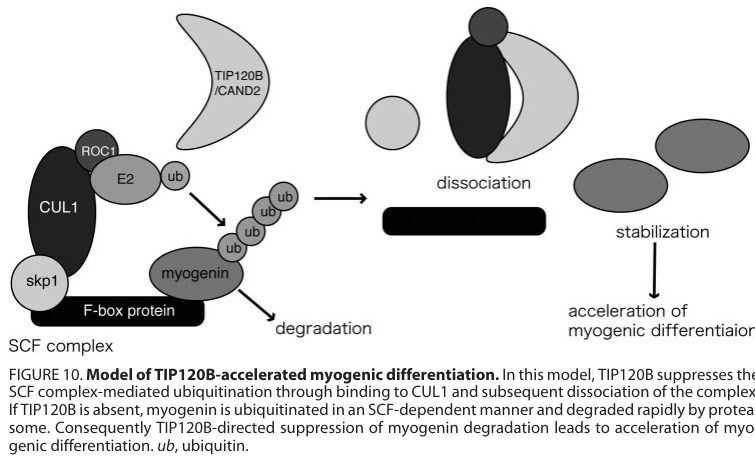

CAND2 (Cullin-associated NEDD8-dissociated protein 2; also TIP120B, TBP-interacting protein of 120 kDa B) is a large (~1236 aa) HEAT-repeat (alpha-solenoid) protein and the paralog of CAND1. Like CAND1, it functions as a regulator of cullin-RING ubiquitin ligase (CRL/SCF) assembly rather than as a ligase itself: it binds unneddylated, substrate-receptor-free cullin-RBX cores (CAND-bound cullins cannot be neddylated, and neddylated cullins do not stably bind CAND) and acts as an F-box-protein exchange factor, sequestering cullins and accelerating the dissociation/exchange of F-box (and other substrate-recognition) modules to dynamically reshape the cellular repertoire of active CRL complexes within the NEDD8/COP9-signalosome remodeling cycle. CAND2 has no catalytic ubiquitin-ligase activity of its own. Biochemically it binds the CUL1-RBX1 core comparably to CAND1 but catalyzes SCF disassembly with lower efficiency (higher KM, faster koff), and CAND1 and CAND2 can act nonredundantly to support optimal activity of specific SCF ligases (e.g. SCF(FBXL5)-mediated IRP2 turnover). It was originally identified as a TBP-interacting protein expressed preferentially in muscle and induced during myogenesis, where it binds CUL1 and suppresses SCF-dependent ubiquitination of the differentiation factor myogenin to accelerate myogenic differentiation; it also interacts with the transcription-related factors TBP and CNOT3/NOT3, and is a specific in vitro substrate of the HECT E3 ligase UBE3C/KIAA10, which targets it for proteasomal degradation. CAND2 is enriched in skeletal and cardiac muscle and is also found in epididymis; subcellular pools are reported in both the nucleus and the cytosol. Common variation at the CAND2 locus (rs4642101) is associated with atrial fibrillation risk.
| GO Term | Evidence | Action | Reason |
|---|---|---|---|
|
GO:0005634
nucleus
|
IBA
GO_REF:0000033 |
KEEP AS NON CORE |
Summary: Phylogenetic assignment of nuclear localization, consistent with UniProt's reported nuclear localization and the TBP-interaction history.
Reason: Plausible localization (UniProt lists Nucleus), but a cytosolic pool is also reported (IDA) and the CRL-assembly regulator function is not restricted to the nucleus; non-core.
Supporting Evidence:
file:human/CAND2/CAND2-uniprot.txt
SUBCELLULAR LOCATION: Nucleus
|
|
GO:0010265
SCF complex assembly
|
IBA
GO_REF:0000033 |
ACCEPT |
Summary: Phylogenetic assignment of involvement in SCF complex assembly, the core function of the CAND family as CRL substrate-receptor exchange factors. Core process, now supported by direct human CAND2 biochemistry (F-box exchange-factor activity on the CUL1-RBX1 core) and the muscle myogenin/CUL1 study.
Reason: Core biological process; CAND2, like CAND1, promotes exchange of the F-box substrate-recognition subunit in SCF complexes, regulating CRL assembly. Human CAND2 binds the CUL1-RBX1 core and acts as an F-box exchange factor (less efficient than CAND1), and in muscle it binds CUL1 to modulate SCF-dependent turnover of myogenin.
Supporting Evidence:
file:human/CAND2/CAND2-uniprot.txt
promotes the exchange of the substrate-recognition F-box subunit in SCF complexes, thereby playing a key role in the cellular repertoire of SCF complexes
file:human/CAND2/CAND2-deep-research-falcon.md
CAND-family proteins (classically CAND1, by inference also CAND2) preferentially associate with **unneddylated** cullins; structural/mechanistic work emphasizes that **CAND-bound cullins cannot be neddylated**, and **neddylated cullins do not stably bind CAND**
|
|
GO:0016567
protein ubiquitination
|
IBA
GO_REF:0000033 |
MARK AS OVER ANNOTATED |
Summary: Phylogenetic assignment of involvement in protein ubiquitination. CAND2 has no ligase activity; it regulates CRL assembly, indirectly affecting ubiquitination flux.
Reason: CAND2 is a CRL assembly regulator/exchange factor, not a ubiquitin ligase or conjugation enzyme. It does not itself ubiquitinate substrates; an involved_in protein ubiquitination annotation overstates a direct catalytic/process role. Its effect on ubiquitination is indirect via SCF complex assembly.
Supporting Evidence:
file:human/CAND2/CAND2-uniprot.txt
Probable assembly factor of SCF (SKP1-CUL1-F-box protein) E3 ubiquitin ligase complexes
|
|
GO:0005634
nucleus
|
IEA
GO_REF:0000120 |
KEEP AS NON CORE |
Summary: Combined automated electronic assignment of nuclear localization, transferred from the UniProt subcellular location / mouse ortholog.
Reason: Plausible localization redundant with the IBA nucleus annotation; a cytosolic pool also exists, and localization is non-core relative to the CRL-assembly function.
Supporting Evidence:
file:human/CAND2/CAND2-uniprot.txt
SUBCELLULAR LOCATION: Nucleus
|
|
GO:0010265
SCF complex assembly
|
IEA
GO_REF:0000002 |
ACCEPT |
Summary: InterPro-based electronic assignment (CAND1/CAND2 family signature IPR039852) of involvement in SCF complex assembly. Core process.
Reason: Core biological process; redundant with the IBA assignment and consistent with the CAND family's exchange-factor role.
Supporting Evidence:
file:human/CAND2/CAND2-uniprot.txt
promotes the exchange of the substrate-recognition F-box subunit in SCF complexes, thereby playing a key role in the cellular repertoire of SCF complexes
|
|
GO:0005515
protein binding
|
IPI
PMID:23864651 The identification of novel proteins that interact with the ... |
KEEP AS NON CORE |
Summary: Membrane yeast two-hybrid interaction with the GLP-1 receptor (GLP1R) from a screen for GLP-1R interactors. Bare protein binding is uninformative.
Reason: High-throughput interaction screen; bare protein binding is uninformative per curation guidelines and the GLP1R interaction is peripheral to CAND2's CRL-assembly function.
Supporting Evidence:
file:human/CAND2/CAND2-uniprot.txt
O75155; P43220: GLP1R; NbExp=2; IntAct=EBI-5656182, EBI-7466542;
|
|
GO:0005515
protein binding
|
IPI
PMID:32296183 A reference map of the human binary protein interactome. |
KEEP AS NON CORE |
Summary: Binary interactome reference map interactions (e.g. SYP, FHL2, CIDEB). Bare protein binding is uninformative.
Reason: High-throughput interactome; bare protein binding is uninformative.
Supporting Evidence:
file:human/CAND2/CAND2-uniprot.txt
O75155; P08247: SYP; NbExp=3; IntAct=EBI-5656182, EBI-9071725;
|
|
GO:0017025
TBP-class protein binding
|
IEA
GO_REF:0000107 |
KEEP AS NON CORE |
Summary: Ortholog-based electronic assignment of TBP-class protein binding, reflecting the original identification of TIP120B as a TBP-interacting protein.
Reason: Consistent with the TIP120B naming and the TBP-affinity origin (UniProt SUBUNIT lists TBP binding), but this transcription-related interaction is a historical/secondary aspect distinct from the core CRL-assembly function and is only an electronic ortholog transfer.
Supporting Evidence:
file:human/CAND2/CAND2-uniprot.txt
SUBUNIT: Binds TBP, CNOT3 and UBE3C.
|
|
GO:0005829
cytosol
|
IDA
PMID:12692129 Proteolytic targeting of transcriptional regulator TIP120B b... |
ACCEPT |
Summary: Direct (ARUK-UCL curated) evidence for cytosolic localization from the study of TIP120B targeting by the HECT E3 KIAA10/UBE3C.
Reason: IDA-supported localization; a cytosolic pool is consistent with CAND2's role with cytoplasmic CRL components.
Supporting Evidence:
file:human/CAND2/CAND2-uniprot.txt
TBP-interacting protein of 120 kDa B
|
|
GO:0045893
positive regulation of DNA-templated transcription
|
ISS
GO_REF:0000024 |
MARK AS OVER ANNOTATED |
Summary: Sequence-similarity assignment of a transcriptional activator role, transferred from the mouse ortholog (P97536/TIP120A-related) and reflecting the TBP-interacting protein origin.
Reason: The transcriptional-activator characterization is best established for the paralog TIP120A/CAND1; CAND2/TIP120B's own function is CRL substrate-receptor exchange. The ISS transfer (from P97536) likely over-propagates a transcriptional-activation role; treat as over-annotated relative to the supported CRL-assembly function.
Supporting Evidence:
PMID:12207886
Classical TIP120, TIP120A, which functions as a transcriptional activator, is expressed ubiquitously whereas TIP120B is specifically expressed in muscle tissues
|
|
GO:0005515
protein binding
|
IPI
PMID:12207886 TBP-interacting protein 120B, which is induced in relation t... |
KEEP AS NON CORE |
Summary: Yeast two-hybrid / GST pull-down interaction with CNOT3/NOT3 (UniProtKB:O75175). Bare protein binding is uninformative.
Reason: Records a real interaction (CNOT3) from the myogenesis study, but bare protein binding is uninformative; this transcription-related interaction is secondary to the CRL-assembly function.
Supporting Evidence:
PMID:12207886
hNOT3L is associated with TIP120B but not with TIP120A
|
|
GO:0005515
protein binding
|
IPI
PMID:12692129 Proteolytic targeting of transcriptional regulator TIP120B b... |
KEEP AS NON CORE |
Summary: Interaction with the HECT E3 ligase KIAA10/UBE3C (UniProtKB:Q15386), which targets TIP120B for proteasomal degradation. Bare protein binding is uninformative.
Reason: Records the functionally relevant UBE3C/KIAA10 interaction (CAND2 is its substrate), but bare protein binding is uninformative.
Supporting Evidence:
PMID:12692129
TIP120B, but not the closely related protein TIP120A, is a specific substrate of KIAA10 in vitro
|
|
GO:0097602
cullin family protein binding
|
ISS
GO_REF:0000024 |
NEW |
Summary: Proposed molecular function annotation. As a CAND-family protein, CAND2 binds unneddylated cullin-RBX cores; this cullin-binding activity is the molecular basis of its SCF substrate-receptor exchange-factor role and is the core molecular function absent from the existing GOA.
Reason: CAND2's core molecular function is binding cullin-RBX cores to regulate SCF assembly. This is proposed by similarity to its paralog CAND1 (ISS; GO_REF:0000024 = manual curator-judgment transfer to an ortholog/paralog), which is the basis recorded in the evidence metadata rather than a GOA import. The orthology inference is corroborated by reported human structural/biochemical data (a CAND2-cullin cryo-EM structure, PDB 8VVY, and a reported F-box-protein exchange-factor activity on the CUL1-RBX1 core, less efficient than CAND1, preferentially engaging unneddylated cullins); that primary work is recorded here as a lead (see supported_by) and has not yet been read in full, so the annotation conservatively rests on the CAND-family orthology basis. The term is not in the existing GOA and is added here.
Supporting Evidence:
file:human/CAND2/CAND2-uniprot.txt
Probable assembly factor of SCF (SKP1-CUL1-F-box protein) E3 ubiquitin ligase complexes
file:human/CAND2/CAND2-deep-research-falcon.md
a 2025 Nature Communications study (received Feb 2024) showing that human CAND2 can **promote SCF-mediated protein degradation** by functioning as an **F-box protein exchange factor** interacting with the CUL1·RBX1 core, analogous to CAND1 but less efficient
|
Q: Does human CAND2 recapitulate the CAND1 biochemical mechanism (binding unneddylated CUL1-RBX1 and accelerating SCF substrate-receptor exchange), and does it act preferentially on muscle-enriched CRL clients given its tissue-restricted expression?
Q: How are CAND2's apparently distinct activities (CRL assembly regulation versus its historical TBP/CNOT3 transcription-related interactions) related, and is the transcriptional role a genuine function or an artifact of the TBP-affinity discovery method?
Q: In skeletal/cardiac muscle, does CAND2 act predominantly to inhibit specific SCF complexes (e.g. stabilizing myogenin or GRK5 by disrupting their SCF targeting) or as a general F-box exchange factor, and which muscle-enriched CRL clients explain its tissue-restricted expression and atrial-fibrillation association?
Experiment: Reconstitute SCF dynamics in vitro with purified CAND2, neddylated and unneddylated CUL1-RBX1, SKP1 and F-box proteins, and measure CAND2-stimulated F-box exchange rates by FRET or pulldown, directly comparing to CAND1.
Experiment: Solve or analyze the cryo-EM structure of CAND2 bound to a cullin-RBX core (PDB 8VVY corresponds to CAND2) to confirm the CAND1-like binding mode, and perform structure-guided mutagenesis to test which contacts are required for exchange-factor activity versus the reported TBP/CNOT3 interactions.
The research report should be a detailed narrative explaining the function, biological processes, and localization of the gene product. Citations should be given for all claims.
You should prioritize authoritative reviews and primary scientific literature when conducting research. You can supplement
this with annotations you find in gene/protein databases, but these can be outdated or inaccurate.
We are specifically interested in the primary function of the gene - for enzymes, what reaction is catalyzed, and what is the substrate specificity? For transporters, what is the substrate? For structural proteins or adapters, what is the broader structural role? For signaling molecules, what is the role in the pathway.
We are interested in where in or outside the cell the gene product carries out its function.
We are also interested in the signaling or biochemical pathways in which the gene functions. We are less interested in broad pleiotropic effects, except where these elucidate the precise role.
Include evidence where possible. We are interested in both experimental evidence as well as inference from structure, evolution, or bioinformatic analysis. Precise studies should be prioritized over high-throughput, where available.
The UniProt accession O75155 corresponds to human CAND2, also called TIP120B, described as “cullin-associated and neddylation-dissociated protein 2.” Primary literature explicitly equates TIP120B with CAND2 and places it in the CAND family of large HEAT/ARM-repeat cullin-binding proteins involved in cullin-RING ligase (CRL) regulation (not an enzyme itself). The founding cullin-binding work also identifies CAND2/TIP120B as the muscle-enriched homolog of CAND1, consistent with the UniProt description (liu2002nedd8modificationof pages 1-2, shiraishi2007tbpinteractingprotein120b pages 1-2).
CRLs are modular E3 ubiquitin ligases built around a cullin scaffold (e.g., CUL1) and a RING protein (e.g., RBX1) that recruits E2~ubiquitin, while variable substrate receptor modules provide target specificity. For the canonical SCF complex, SKP1 links CUL1–RBX1 to one of many F-box proteins, enabling recognition of specific substrates (wang2025molecularmechanismsof pages 1-2).
A central regulatory circuit for CRLs is the NEDD8 cycle:
- Neddylation (conjugation of NEDD8 to a cullin) promotes CRL activation.
- Deneddylation is catalyzed by the COP9 signalosome (CSN), reversing NEDD8 attachment and shifting CRLs toward states compatible with remodeling.
CAND-family proteins (classically CAND1, by inference also CAND2) preferentially associate with unneddylated cullins; structural/mechanistic work emphasizes that CAND-bound cullins cannot be neddylated, and neddylated cullins do not stably bind CAND (wang2024cand1inhibitscullin2ring pages 1-3). Reviews integrate this into a dynamic model in which CSN-dependent deneddylation enables CAND-dependent remodeling/exchange of substrate receptor modules (harper2021cullinringubiquitinligase pages 20-21, zhang2024proteinneddylationand pages 8-10, wang2020assemblyandregulation pages 1-3).
CAND2 is best understood as a protein–protein interaction scaffold/regulator (HEAT/ARM-repeat protein) rather than a catalytic enzyme. Foundational work on CAND proteins reports extensive HEAT-repeat architecture (25 HEAT motifs described for human CAND proteins) consistent with flexible scaffolding roles in multi-protein complex control (liu2002nedd8modificationof pages 1-2).
In muscle-cell models (C2C12), TIP120B/CAND2 co-immunoprecipitates with CUL1 under overexpression and at endogenous levels in differentiated cells; microscopy shows broad cellular distribution with slight nuclear enrichment and co-localization with CUL1 (shiraishi2007tbpinteractingprotein120b pages 6-7). These data establish a direct physical basis for CAND2’s effect on SCF activity.
A key physiologic context where CAND2 was experimentally assigned a role is myogenesis. Shiraishi et al. (2007) report that TIP120B/CAND2:
- is induced during myogenic differentiation,
- suppresses SCF-dependent ubiquitination and degradation of myogenin, and
- accelerates myogenic differentiation, consistent with stabilization of a differentiation-driving transcription factor (shiraishi2007tbpinteractingprotein120b pages 1-2).
Mechanistically, the authors propose that CAND2 binding to CUL1 leads to breakdown/dissociation of the SCF–myogenin complex, thereby reducing myogenin ubiquitination and proteasomal turnover (shiraishi2007tbpinteractingprotein120b pages 1-2, shiraishi2007tbpinteractingprotein120b media bfb814a0).
The most direct, up-to-date mechanistic dissection in the provided evidence base is a 2025 Nature Communications study (received Feb 2024) showing that human CAND2 can promote SCF-mediated protein degradation by functioning as an F-box protein exchange factor interacting with the CUL1·RBX1 core, analogous to CAND1 but less efficient (wang2025molecularmechanismsof pages 1-2).
Key quantitative findings from this study include:
- CAND2-catalyzed SCF disassembly shows higher KM (lower apparent exchange efficiency) than CAND1, while binding CUL1 with comparable structure/affinity (wang2025molecularmechanismsof pages 1-2, wang2025molecularmechanismsof pages 10-10).
- Kinetic parameters (mean ± SEM; n=5) reported: CAND2 koff = 4.4 s−1; KM = 648 nM vs CAND1 koff = 2.5 s−1; KM = 355 nM (wang2025molecularmechanismsof pages 10-10).
- Functional overlap with CAND1 is pathway-dependent: in CAND1/CAND2 double knockout (DKO) cells, CAND2HA supplementation restored p-IκBα degradation, demonstrating capacity to support an SCF pathway in cells (wang2025molecularmechanismsof pages 1-2).
- Nonredundant contribution is shown for another SCF: in the SCFFBXL5–IRP2 pathway, IRP2 half-life increased 2.8-fold in DKO, 1.7-fold in CAND1-KO, and 1.8-fold in CAND2-KO, indicating both proteins contribute to optimal SCF function in that context (wang2025molecularmechanismsof pages 1-2).
Interpretation: across historical and modern data, CAND2 appears capable of both inhibitory behavior in specific contexts (e.g., stabilizing myogenin by disrupting SCF targeting) and pro-exchange/pro-turnover behavior consistent with the broader CAND-family role in SCF dynamics. This apparent “paradox” is a known theme in CRL regulation and is framed in authoritative reviews as emerging from the requirement for dynamic receptor exchange and cycling (harper2021cullinringubiquitinligase pages 20-21, wang2020assemblyandregulation pages 1-3).
Foundational cullin-binding work identifies CAND2/TIP120B as specifically expressed in muscle tissues, distinguishing it from more ubiquitous CAND1 (liu2002nedd8modificationof pages 1-2). The myogenesis-focused study operationalizes this in a skeletal muscle differentiation model (C2C12), showing induction with differentiation (shiraishi2007tbpinteractingprotein120b pages 1-2).
CAND2 localization has been observed as broadly cellular with slight nuclear enrichment in C2C12 cells when visualized as GFP-TIP120B; CUL1 is present in both nucleus and cytoplasm and co-localizes with TIP120B (shiraishi2007tbpinteractingprotein120b pages 6-7). A recent mechanistic paper also reports database-supported localization for CAND2 in cytosol and nuclear bodies (wang2025molecularmechanismsof pages 10-10).
CAND2’s best-supported pathway placement is as a regulator of CUL1-based SCF ligases, whose dynamic assembly/remodeling is coupled to the NEDD8 modification state and CSN deneddylation. While many mechanistic details are best established for CAND1, the same regulatory logic is used to interpret CAND2 function as a paralog capable of SCF remodeling (harper2021cullinringubiquitinligase pages 20-21, wang2024cand1inhibitscullin2ring pages 1-3, wang2020assemblyandregulation pages 1-3).
CAND2 is implicated in AF susceptibility primarily through intronic variant rs4642101 at the CAND2 locus:
- A large AF GWAS-integrative study reported rs4642101 as a novel AF risk locus in Europeans with RR = 1.10 (95% CI 1.06–1.14; P = 9.8×10−9), with discovery including 6,707 AF cases and 52,426 controls and further replication/meta-analytic support (sinner2014integratinggenetictranscriptional pages 9-12).
- Supplemental eQTL results reported significant eQTLs for CAND2 in skeletal muscle (and also thyroid) for proxy SNPs linked to the rs4642101 signal, supporting a regulatory mechanism affecting CAND2 expression (sinner2014integratinggenetictranscriptional pages 63-64).
A clinically closer implementation setting is postoperative AF:
- A prospective two-stage nested case-control study among Chinese patients undergoing CABG (total 1,400 patients) found rs4642101 associated with postoperative AF risk with pooled OR = 1.21 (95% CI 1.08–1.36; P = 9.8×10−4) per minor allele; genotype risks versus TT included TG OR ≈ 1.24 and GG OR ≈ 1.38 in pooled analyses (stage-specific genotype ORs were also reported) (wei2016neurlrs6584555and pages 1-2, wei2016neurlrs6584555and pages 2-5).
- The same study reports that the AF risk allele correlated with increased CAND2 expression in right atrial appendage samples (P < 0.001) (wei2016neurlrs6584555and pages 1-2, wei2016neurlrs6584555and pages 2-5).
Caveat on generalizability: replication in Chinese Han AF case-control cohorts has shown heterogeneity; one study reported no significant allelic association for rs4642101 with AF (OR around ~1.09 with CI spanning 1.0), suggesting population- and design-dependent detectability of this modest effect (wang2018genomicvariantsin pages 2-3).
In a cardiac remodeling model, Cand2 was reported to be translationally regulated by mTORC1 and to promote adverse remodeling via a mechanism involving CUL1 and stabilization of GRK5. Quantitative findings include that neddylation inhibition (MLN4924) increased GRK5 protein ~2.5-fold, CUL1 knockdown increased GRK5 ~2-fold, and Cand2 overexpression increased GRK5 half-life from ~18 to ~27 hours (gorska2020musclespecifictranslational pages 7-8). Although this study is in mouse/cardiomyocyte contexts, it is widely cited as mechanistically linking Cand2 to cardiac pathology (diaz2022rolesofcullinring pages 20-21).
CAND2 is not currently a routine therapeutic target; the most concrete real-world uses supported by the provided evidence are:
- Genetic risk stratification research for AF/POAF via variants at the CAND2 locus (rs4642101) (wei2016neurlrs6584555and pages 1-2, sinner2014integratinggenetictranscriptional pages 9-12).
- Pathway-informed interpretation in drug discovery/chemical biology targeting the neddylation/CRL axis: although CAND1 is emphasized in 2023–2024 mechanistic advances, these works shape how CAND2 is interpreted as part of the same CRL-cycling circuitry (zhang2024proteinneddylationand pages 8-10, wang2024cand1inhibitscullin2ring pages 1-3).
The provided 2023–2024 literature capture contained limited direct primary human CAND2 experimentation; most 2023–2024 content was indirect (CAND1/CRL-cycle and neddylation pathway updates). The most relevant 2023–2024 sources for context include:
- A 2024 review synthesizing neddylation biology and reiterating the CAND–CSN–NEDD8 regulatory logic for CRLs (zhang2024proteinneddylationand pages 8-10).
- A 2024 Nature Structural & Molecular Biology study refining the concept that CAND-family regulation can be cullin-specific (e.g., inhibitory behavior for CRL2), emphasizing that CAND effects are not uniformly activating—important when inferring potential CAND2 behavior beyond SCF/CRL1 (wang2024cand1inhibitscullin2ring pages 1-3, wang2024cand1inhibitscullin2ring pages 8-9).
- A 2023 Cell commentary framing CAND1 (and homolog CAND2) as exchange-factor-like regulators in updated models of SCF repertoire control (wang2025molecularmechanismsof pages 10-10).
Because of this evidence gap, the newest direct mechanistic clarification for human CAND2 in the provided materials comes from 2025 publication (received 2024), which is included above for completeness (wang2025molecularmechanismsof pages 1-2).
Authoritative reviews in the CRL field emphasize that apparent inhibitory effects of CAND proteins in isolated assays coexist with in vivo requirements for dynamic remodeling of CRLs. This “regulatory circuit” framing—integrating neddylation, CSN deneddylation, and CAND-mediated substrate receptor exchange—is the prevailing conceptual model used to interpret CAND-family function, and provides the most robust basis for annotating CAND2 as a regulator of SCF/CRL dynamics rather than a simple inhibitor (harper2021cullinringubiquitinligase pages 20-21, wang2020assemblyandregulation pages 1-3).
Two structured summaries are provided below:
| Claim/Function | Molecular mechanism | Key partners/substrates | Evidence type (biochemical/cell/animal/genetics/review) | Key quantitative data | Primary sources (include DOI URLs and year) |
|---|---|---|---|---|---|
| Human CAND2/TIP120B is the validated mammalian homolog/paralog of CAND1 and belongs to the cullin-associated, NEDD8-dissociated protein family | Foundational work identified CAND2/TIP120B as a highly related mammalian homolog of CAND1; CAND proteins are large HEAT-repeat cullin-binding factors associated with deneddylated cullins | CUL1 and other cullins; CAND family | Biochemical, review | CAND1/CAND2 share 63% sequence identity; human CAND proteins contain 25 HEAT motifs | Liu et al., 2002, https://doi.org/10.1016/S1097-2765(02)00783-9; Wang et al., 2025, https://doi.org/10.1038/s41467-025-57065-5 (liu2002nedd8modificationof pages 1-2, wang2025molecularmechanismsof pages 1-2) |
| CAND2 binds cullins, especially CUL1, and associates with SCF complexes in muscle cells | TIP120B/CAND2 physically associates with CUL1 under overexpression and endogenous conditions; both N- and C-terminal regions are required for efficient CUL1 association; this cullin binding underlies its regulatory effect on SCF | CUL1, SCF complex, SKP1 | Biochemical, cell | C-terminal truncation largely abolishes CUL1 binding; qualitative co-localization shows ubiquitous distribution with slight nuclear concentration | Shiraishi et al., 2007, https://doi.org/10.1074/jbc.M611513200 (shiraishi2007tbpinteractingprotein120b pages 1-2, shiraishi2007tbpinteractingprotein120b pages 6-7) |
| CAND2 inhibits SCF-dependent ubiquitination of myogenin and stabilizes myogenin during myogenic differentiation | By binding CUL1, CAND2 disrupts or breaks down the SCF-myogenin complex, reducing SCF-dependent ubiquitination and proteasomal degradation of myogenin, thereby accelerating differentiation | Myogenin, CUL1, SCF | Biochemical, cell, review | MyoD half-life cited as ~60 min for context; direct quantitative half-life for myogenin not provided in extracted text | Shiraishi et al., 2007, https://doi.org/10.1074/jbc.M611513200; Diaz et al., 2022, https://doi.org/10.3390/biom12030416 (shiraishi2007tbpinteractingprotein120b pages 1-2, shiraishi2007tbpinteractingprotein120b pages 6-7, diaz2022rolesofcullinring pages 20-21) |
| CAND2 is muscle-enriched/muscle-specific in expression | Primary and review sources describe CAND2/TIP120B as a muscle-specific isoform/paralog, distinguishing it from ubiquitously expressed CAND1 | Striated muscle tissues; skeletal/cardiac muscle | Biochemical, review | No absolute expression value in extracted text; described as muscle-specific and detected in striated muscle/testis in review summary | Liu et al., 2002, https://doi.org/10.1016/S1097-2765(02)00783-9; Shiraishi et al., 2007, https://doi.org/10.1074/jbc.M611513200; Diaz et al., 2022, https://doi.org/10.3390/biom12030416 (liu2002nedd8modificationof pages 1-2, shiraishi2007tbpinteractingprotein120b pages 1-2, diaz2022rolesofcullinring pages 20-21) |
| Subcellular localization of CAND2 includes cytosol and nucleus/nuclear bodies | In C2C12 cells, GFP-TIP120B is observed throughout the cell with slight nuclear enrichment and co-localizes with CUL1; recent summary cites Human Protein Atlas localization to cytosol and nuclear bodies | CUL1; nuclear bodies; cytosol | Cell, database-backed summary | Qualitative localization only in C2C12 assays; no percentages reported | Shiraishi et al., 2007, https://doi.org/10.1074/jbc.M611513200; Wang et al., 2025, https://doi.org/10.1038/s41467-025-57065-5 (shiraishi2007tbpinteractingprotein120b pages 6-7, wang2025molecularmechanismsof pages 10-10) |
| Current mechanistic understanding: CAND2 can promote SCF dynamics as an F-box protein exchange factor in human cells, but is less efficient than CAND1 | CAND2 binds the CUL1·RBX1 core similarly to CAND1 and promotes SCF-mediated protein degradation by catalyzing exchange/disassembly of SKP1·F-box modules; higher KM indicates lower exchange efficiency, potentially allowing longer retention of F-box proteins on CUL1 | CUL1, RBX1, SKP1·FBP modules, SCF | Biochemical, cell | CAND2 koff = 4.4 s^-1 and KM = 648 nM vs CAND1 koff = 2.5 s^-1 and KM = 355 nM (n = 5); weaker activity attributed to higher KM | Wang et al., 2025, https://doi.org/10.1038/s41467-025-57065-5 (wang2025molecularmechanismsof pages 10-10, wang2025molecularmechanismsof pages 1-2) |
| CAND2 can support SCF activity in cells and partially overlaps functionally with CAND1 | In CAND1/CAND2 double-knockout cells, ectopic CAND2 restores degradation of an SCF substrate, indicating that CAND2 is competent to promote SCF function in vivo, although CAND1 dominates some pathways | SCFβ-TrCP, phospho-IκBα | Cell | p-IκBα degradation rescued by CAND2HA in DKO cells; no defect in CAND2 single-KO for this pathway | Wang et al., 2025, https://doi.org/10.1038/s41467-025-57065-5 (wang2025molecularmechanismsof pages 1-2) |
| Both CAND1 and CAND2 are required for optimal activity of at least some SCF ligases | In the SCFFBXL5 pathway, loss of either CAND1 or CAND2 slows degradation of IRP2, indicating nonredundant contribution to optimal SCF function | FBXL5, IRP2, CUL1-based SCF | Cell | IRP2 half-life increased 2.8-fold in CAND1/CAND2 DKO, 1.7-fold in CAND1-KO, and 1.8-fold in CAND2-KO | Wang et al., 2025, https://doi.org/10.1038/s41467-025-57065-5 (wang2025molecularmechanismsof pages 1-2) |
| In cardiac muscle, Cand2 is translationally upregulated by mTORC1 and promotes adverse remodeling via Grk5 stabilization | Cand2 binds/sequesters unneddylated CUL1, altering the neddylated CUL1 pool and reducing Cul1-mediated degradation of Grk5; this links mTORC1-driven translational control to pathological cardiac growth | mTORC1, CUL1, GRK5 | Cell, animal, review | MLN4924 raises GRK5 protein ~2.5-fold; CUL1 knockdown raises GRK5 ~2-fold; Cand2 overexpression prolongs GRK5 half-life from ~18 h to ~27 h | Górska et al., 2021, https://doi.org/10.15252/embr.202052170; Diaz et al., 2022, https://doi.org/10.3390/biom12030416 (gorska2020musclespecifictranslational pages 7-8, diaz2022rolesofcullinring pages 20-21) |
| CAND2 has human cardiovascular genetics support, especially for atrial fibrillation/postoperative AF risk | AF-associated intronic variant rs4642101 near/in CAND2 is associated with higher CAND2 expression and increased AF/POAF susceptibility in human cohorts; functional zebrafish validation implicated the locus in atrial electrophysiology | rs4642101; atrial fibrillation; postoperative AF | Genetics | AF GWAS: RR 1.10, 95% CI 1.06–1.14, P = 9.8×10^-9; cis-eQTL P = 2.6×10^-19; zebrafish Cand2 knockdown prolonged atrial APD by 45%; POAF after CABG OR 1.21 per minor allele, 95% CI 1.08–1.36, P = 9.8×10^-4 | Sinner et al., 2014, https://doi.org/10.1161/CIRCULATIONAHA.114.009892; Wei et al., 2016, https://doi.org/10.18632/oncotarget.9422 (diaz2022rolesofcullinring pages 20-21) |
| CAND proteins are integrated into the CRL neddylation/deneddylation cycle that controls SCF remodeling | In the general CRL cycle, CAND proteins bind unneddylated cullins; neddylation prevents stable CAND binding, whereas CSN-mediated deneddylation restores a state permissive for CAND-dependent receptor exchange and remodeling | NEDD8, CSN, CUL1/RBX1, SKP1·F-box modules | Review, biochemical | For CAND1-CUL2, neddylation increased dissociation rate ~5-fold (t1/2 20 min to 4 min), illustrating the principle that neddylation destabilizes CAND-cullin binding | Harper & Schulman, 2021, https://doi.org/10.1146/annurev-biochem-090120-013613; Zhang et al., 2024, https://doi.org/10.1038/s41392-024-01800-9; Wang et al., 2024, https://doi.org/10.1038/s41594-023-01167-5; Wang et al., 2020, https://doi.org/10.1007/978-981-15-1025-0_3 (harper2021cullinringubiquitinligase pages 20-21, zhang2024proteinneddylationand pages 8-10, wang2024cand1inhibitscullin2ring pages 1-3, wang2024cand1inhibitscullin2ring pages 8-9, wang2020assemblyandregulation pages 1-3) |
Table: This table summarizes validated functional annotation for human CAND2/TIP120B (UniProt O75155), including core molecular roles, key partners, localization, and disease-linked findings. It emphasizes primary-source evidence and quantitative data available from the provided context IDs.
| Year | Study (first author) | Publication type | What’s new (1–2 sentences) | Relevance to CAND2 (direct/indirect) | Key data/metrics | URL/DOI |
|---|---|---|---|---|---|---|
| 2024 | Zhang | Review | Synthesizes the current neddylation field and reiterates the core regulatory logic that CAND proteins bind unneddylated cullins, while CSN-mediated deneddylation restores a CAND-accessible state. This is useful pathway context for interpreting how human CAND2 should function within CRL cycling, even though the review focuses mainly on CAND1. (zhang2024proteinneddylationand pages 8-10) | Indirect | Describes structural precedents for CAND1-cullin complexes and the CAND/CSN/NEDD8 cycle; no CAND2-specific quantitative dataset reported in the extracted context. (zhang2024proteinneddylationand pages 8-10) | https://doi.org/10.1038/s41392-024-01800-9 |
| 2024 | Wang | Primary research (Nature Structural & Molecular Biology) | Shows that CAND1 can inhibit CRL2 assembly/activity rather than simply acting as a universal exchange activator, refining the broader CRL regulatory model. This is important for CAND2 annotation because it argues that CAND-family effects are cullin-context dependent, not uniformly activating or inhibitory. (wang2024cand1inhibitscullin2ring pages 3-4, wang2024cand1inhibitscullin2ring pages 1-3, wang2024cand1inhibitscullin2ring pages 8-9) | Indirect | For CUL2·CAND1, neddylation increased dissociation ~5-fold, shortening t1/2 from ~20 min to ~4 min; MLN4924 stabilized a CRL2 substrate, and CSN inhibition mildly enhanced degradation in the reported system. (wang2024cand1inhibitscullin2ring pages 3-4, wang2024cand1inhibitscullin2ring pages 8-9) | https://doi.org/10.1038/s41594-023-01167-5 |
| 2023 | Xie | Commentary/News & Views-style article | Highlights 2023 advances establishing CAND1 as a dynamic CRL assembly/disassembly factor and explicitly notes that CAND1 and its homolog CAND2 can be viewed as exchange-factor-like regulators. It does not add new CAND2 experiments, but it frames how the field interprets CAND-family function. (wang2025molecularmechanismsof pages 10-10) | Indirect | No new primary CAND2 metrics in the extracted context; conceptual emphasis on exchange-factor behavior of CAND-family proteins. (wang2025molecularmechanismsof pages 10-10) | https://doi.org/10.1016/j.cell.2023.04.001 |
| 2023–2024 | No direct human CAND2 primary study identified in the provided 2023–2024 context IDs | Evidence gap statement | Within the provided 2023–2024 context, no direct primary study on human CAND2 itself was captured; most recent evidence is pathway-level or CAND1-centered and therefore must be used cautiously for inference. The strongest direct mechanistic human CAND2 study in the available context is from 2025, outside the user-prioritized 2023–2024 window. (wang2025molecularmechanismsof pages 10-10, zhang2024proteinneddylationand pages 8-10, wang2024cand1inhibitscullin2ring pages 3-4, wang2024cand1inhibitscullin2ring pages 1-3, wang2024cand1inhibitscullin2ring pages 8-9) | Direct evidence lacking in 2023–2024; indirect inference only | Key implication: current 2023–2024 annotation of human CAND2 relies mainly on CAND-family/CRL-cycle context rather than new CAND2-specific experiments in the provided evidence base. (wang2025molecularmechanismsof pages 10-10, zhang2024proteinneddylationand pages 8-10, wang2024cand1inhibitscullin2ring pages 3-4, wang2024cand1inhibitscullin2ring pages 1-3, wang2024cand1inhibitscullin2ring pages 8-9) | n/a |
Table: This table summarizes the most relevant 2023–2024 studies in the provided evidence base for interpreting human CAND2 function and pathway context. It also makes explicit that direct human CAND2 primary evidence was not captured in the provided 2023–2024 contexts, so recent annotation depends largely on indirect CAND-family and CRL-cycle studies.
The mechanistic model and core biochemical evidence for CAND2/TIP120B disrupting SCF-dependent ubiquitination of myogenin are captured in figures retrieved from Shiraishi et al. 2007, including the proposed mechanism schematic and binding/ubiquitination/dissociation assays (shiraishi2007tbpinteractingprotein120b media bfb814a0, shiraishi2007tbpinteractingprotein120b media 11601d20, shiraishi2007tbpinteractingprotein120b media 792fadc0, shiraishi2007tbpinteractingprotein120b media c323ecb5).
CAND2 (TIP120B; UniProt O75155) is a HEAT/ARM-repeat cullin-binding regulator enriched in striated muscle that modulates CUL1-based SCF ubiquitin ligases within the NEDD8/CSN CRL-cycling system. Experimentally, CAND2 binds CUL1 and can suppress SCF-dependent ubiquitination of specific substrates (e.g., myogenin) in myogenic differentiation, while newer mechanistic work indicates it can also act as an F-box protein exchange factor that promotes SCF-mediated protein turnover in a pathway-dependent manner. Genetic evidence links regulatory variation at the CAND2 locus (rs4642101) to atrial fibrillation and postoperative atrial fibrillation risk, with eQTL support for altered CAND2 expression in relevant tissues (wang2025molecularmechanismsof pages 1-2, shiraishi2007tbpinteractingprotein120b pages 1-2, wei2016neurlrs6584555and pages 1-2, sinner2014integratinggenetictranscriptional pages 9-12).
References
(liu2002nedd8modificationof pages 1-2): Jidong Liu, Manabu Furukawa, Tomohiro Matsumoto, and Yue Xiong. Nedd8 modification of cul1 dissociates p120(cand1), an inhibitor of cul1-skp1 binding and scf ligases. Molecular cell, 10 6:1511-8, Dec 2002. URL: https://doi.org/10.1016/s1097-2765(02)00783-9, doi:10.1016/s1097-2765(02)00783-9. This article has 424 citations and is from a highest quality peer-reviewed journal.
(shiraishi2007tbpinteractingprotein120b pages 1-2): Seiji Shiraishi, Chang Zhou, Tsutomu Aoki, Naruki Sato, Tomoki Chiba, Keiji Tanaka, Shosei Yoshida, Yoko Nabeshima, Yo-ichi Nabeshima, and Taka-aki Tamura. Tbp-interacting protein 120b (tip120b)/cullin-associated and neddylation-dissociated 2 (cand2) inhibits scf-dependent ubiquitination of myogenin and accelerates myogenic differentiation*. Journal of Biological Chemistry, 282:9017-9028, Mar 2007. URL: https://doi.org/10.1074/jbc.m611513200, doi:10.1074/jbc.m611513200. This article has 57 citations and is from a domain leading peer-reviewed journal.
(wang2025molecularmechanismsof pages 1-2): Kankan Wang, Lihong Li, Sebastian Kenny, Dailin Gan, Justin M. Reitsma, Yun Zhou, Chittaranjan Das, and Xing Liu. Molecular mechanisms of cand2 in regulating scf ubiquitin ligases. Nature Communications, Feb 2025. URL: https://doi.org/10.1038/s41467-025-57065-5, doi:10.1038/s41467-025-57065-5. This article has 5 citations and is from a highest quality peer-reviewed journal.
(wang2024cand1inhibitscullin2ring pages 1-3): Kankan Wang, Stephanie Diaz, Lihong Li, Jeremy R. Lohman, and Xing Liu. Cand1 inhibits cullin-2-ring ubiquitin ligases for enhanced substrate specificity. Nature Structural & Molecular Biology, pages 1-13, Jan 2024. URL: https://doi.org/10.1038/s41594-023-01167-5, doi:10.1038/s41594-023-01167-5. This article has 6 citations and is from a highest quality peer-reviewed journal.
(harper2021cullinringubiquitinligase pages 20-21): J. Wade Harper and Brenda A. Schulman. Cullin-ring ubiquitin ligase regulatory circuits: a quarter century beyond the f-box hypothesis. Annual Review of Biochemistry, 90:403-429, Jun 2021. URL: https://doi.org/10.1146/annurev-biochem-090120-013613, doi:10.1146/annurev-biochem-090120-013613. This article has 297 citations and is from a domain leading peer-reviewed journal.
(zhang2024proteinneddylationand pages 8-10): Shizhen Zhang, Qing Yu, Zhijian Li, Yongchao Zhao, and Yi Sun. Protein neddylation and its role in health and diseases. Signal Transduction and Targeted Therapy, Apr 2024. URL: https://doi.org/10.1038/s41392-024-01800-9, doi:10.1038/s41392-024-01800-9. This article has 158 citations and is from a peer-reviewed journal.
(wang2020assemblyandregulation pages 1-3): Kankan Wang, Raymond J. Deshaies, and Xing Liu. Assembly and regulation of crl ubiquitin ligases. Advances in experimental medicine and biology, 1217:33-46, Jan 2020. URL: https://doi.org/10.1007/978-981-15-1025-0_3, doi:10.1007/978-981-15-1025-0_3. This article has 77 citations and is from a peer-reviewed journal.
(shiraishi2007tbpinteractingprotein120b pages 6-7): Seiji Shiraishi, Chang Zhou, Tsutomu Aoki, Naruki Sato, Tomoki Chiba, Keiji Tanaka, Shosei Yoshida, Yoko Nabeshima, Yo-ichi Nabeshima, and Taka-aki Tamura. Tbp-interacting protein 120b (tip120b)/cullin-associated and neddylation-dissociated 2 (cand2) inhibits scf-dependent ubiquitination of myogenin and accelerates myogenic differentiation*. Journal of Biological Chemistry, 282:9017-9028, Mar 2007. URL: https://doi.org/10.1074/jbc.m611513200, doi:10.1074/jbc.m611513200. This article has 57 citations and is from a domain leading peer-reviewed journal.
(shiraishi2007tbpinteractingprotein120b media bfb814a0): Seiji Shiraishi, Chang Zhou, Tsutomu Aoki, Naruki Sato, Tomoki Chiba, Keiji Tanaka, Shosei Yoshida, Yoko Nabeshima, Yo-ichi Nabeshima, and Taka-aki Tamura. Tbp-interacting protein 120b (tip120b)/cullin-associated and neddylation-dissociated 2 (cand2) inhibits scf-dependent ubiquitination of myogenin and accelerates myogenic differentiation*. Journal of Biological Chemistry, 282:9017-9028, Mar 2007. URL: https://doi.org/10.1074/jbc.m611513200, doi:10.1074/jbc.m611513200. This article has 57 citations and is from a domain leading peer-reviewed journal.
(wang2025molecularmechanismsof pages 10-10): Kankan Wang, Lihong Li, Sebastian Kenny, Dailin Gan, Justin M. Reitsma, Yun Zhou, Chittaranjan Das, and Xing Liu. Molecular mechanisms of cand2 in regulating scf ubiquitin ligases. Nature Communications, Feb 2025. URL: https://doi.org/10.1038/s41467-025-57065-5, doi:10.1038/s41467-025-57065-5. This article has 5 citations and is from a highest quality peer-reviewed journal.
(sinner2014integratinggenetictranscriptional pages 9-12): Moritz F. Sinner, Nathan R. Tucker, Kathryn L. Lunetta, Kouichi Ozaki, J. Gustav Smith, Stella Trompet, Joshua C. Bis, Honghuang Lin, Mina K. Chung, Jonas B. Nielsen, Steven A. Lubitz, Bouwe P. Krijthe, Jared W. Magnani, Jiangchuan Ye, Michael H. Gollob, Tatsuhiko Tsunoda, Martina Müller-Nurasyid, Peter Lichtner, Annette Peters, Elena Dolmatova, Michiaki Kubo, Jonathan D. Smith, Bruce M. Psaty, Nicholas L. Smith, J. Wouter Jukema, Daniel I. Chasman, Christine M. Albert, Yusuke Ebana, Tetsushi Furukawa, Peter W. Macfarlane, Tamara B. Harris, Dawood Darbar, Marcus Dörr, Anders G. Holst, Jesper H. Svendsen, Albert Hofman, Andre G. Uitterlinden, Vilmundur Gudnason, Mitsuaki Isobe, Rainer Malik, Martin Dichgans, Jonathan Rosand, David R. Van Wagoner, Emelia J. Benjamin, David J. Milan, Olle Melander, Susan R. Heckbert, Ian Ford, Yongmei Liu, John Barnard, Morten S. Olesen, Bruno H.C. Stricker, Toshihiro Tanaka, Stefan Kääb, and Patrick T. Ellinor. Integrating genetic, transcriptional, and functional analyses to identify 5 novel genes for atrial fibrillation. Circulation, 130(15):1225-1235, Oct 2014. URL: https://doi.org/10.1161/circulationaha.114.009892, doi:10.1161/circulationaha.114.009892. This article has 181 citations and is from a highest quality peer-reviewed journal.
(sinner2014integratinggenetictranscriptional pages 63-64): Moritz F. Sinner, Nathan R. Tucker, Kathryn L. Lunetta, Kouichi Ozaki, J. Gustav Smith, Stella Trompet, Joshua C. Bis, Honghuang Lin, Mina K. Chung, Jonas B. Nielsen, Steven A. Lubitz, Bouwe P. Krijthe, Jared W. Magnani, Jiangchuan Ye, Michael H. Gollob, Tatsuhiko Tsunoda, Martina Müller-Nurasyid, Peter Lichtner, Annette Peters, Elena Dolmatova, Michiaki Kubo, Jonathan D. Smith, Bruce M. Psaty, Nicholas L. Smith, J. Wouter Jukema, Daniel I. Chasman, Christine M. Albert, Yusuke Ebana, Tetsushi Furukawa, Peter W. Macfarlane, Tamara B. Harris, Dawood Darbar, Marcus Dörr, Anders G. Holst, Jesper H. Svendsen, Albert Hofman, Andre G. Uitterlinden, Vilmundur Gudnason, Mitsuaki Isobe, Rainer Malik, Martin Dichgans, Jonathan Rosand, David R. Van Wagoner, Emelia J. Benjamin, David J. Milan, Olle Melander, Susan R. Heckbert, Ian Ford, Yongmei Liu, John Barnard, Morten S. Olesen, Bruno H.C. Stricker, Toshihiro Tanaka, Stefan Kääb, and Patrick T. Ellinor. Integrating genetic, transcriptional, and functional analyses to identify 5 novel genes for atrial fibrillation. Circulation, 130(15):1225-1235, Oct 2014. URL: https://doi.org/10.1161/circulationaha.114.009892, doi:10.1161/circulationaha.114.009892. This article has 181 citations and is from a highest quality peer-reviewed journal.
(wei2016neurlrs6584555and pages 1-2): Tiemin Wei, Jingjing Song, Min Xu, Lingchun Lv, Chong Liu, Jiayi Shen, and Ying Huang. Neurl rs6584555 and cand2 rs4642101 contribute to postoperative atrial fibrillation: a prospective study among chinese population. Oncotarget, 7:42617-42624, May 2016. URL: https://doi.org/10.18632/oncotarget.9422, doi:10.18632/oncotarget.9422. This article has 14 citations.
(wei2016neurlrs6584555and pages 2-5): Tiemin Wei, Jingjing Song, Min Xu, Lingchun Lv, Chong Liu, Jiayi Shen, and Ying Huang. Neurl rs6584555 and cand2 rs4642101 contribute to postoperative atrial fibrillation: a prospective study among chinese population. Oncotarget, 7:42617-42624, May 2016. URL: https://doi.org/10.18632/oncotarget.9422, doi:10.18632/oncotarget.9422. This article has 14 citations.
(wang2018genomicvariantsin pages 2-3): Pengxia Wang, Weixi Qin, Pengyun Wang, Yufeng Huang, Ying Liu, Rongfeng Zhang, Sisi Li, Qin Yang, Xiaojing Wang, Feifei Chen, Jingqiu Liu, Bo Yang, Xiang Cheng, Yuhua Liao, Yanxia Wu, Tie Ke, Xin Tu, Xiang Ren, Yanzong Yang, Yunlong Xia, Xiaoping Luo, Mugen Liu, He Li, Jingyu Liu, Yi Xiao, Qiuyun Chen, Chengqi Xu, and Qing K. Wang. Genomic variants in neurl, gja1 and cux2 significantly increase genetic susceptibility to atrial fibrillation. Scientific Reports, Feb 2018. URL: https://doi.org/10.1038/s41598-018-21611-7, doi:10.1038/s41598-018-21611-7. This article has 30 citations and is from a peer-reviewed journal.
(gorska2020musclespecifictranslational pages 7-8): Agnieszka A. Gorska, Clara Sandmann, Eva Riechert, Christoph Hofmann, Ellen Malovrh, Eshita Varma, Vivien Kmietczyk, Lonny Jürgensen, Verena Kamuf-Schenk, Claudia Stroh, Jennifer Furkel, Matthias H. Konstandin, Carsten Sticht, Etienne Boileau, Christoph Dieterich, Hugo A. Katus, Shirin Doroudgar, and Mirko Völkers. Muscle specific translational control of cand2 by mtorc1 regulates adverse cardiac remodeling. BioRxiv, Dec 2020. URL: https://doi.org/10.1101/2020.11.29.403196, doi:10.1101/2020.11.29.403196. This article has 0 citations.
(diaz2022rolesofcullinring pages 20-21): Stephanie Diaz, Kankan Wang, Benita Sjögren, and Xing Liu. Roles of cullin-ring ubiquitin ligases in cardiovascular diseases. Biomolecules, 12:416, Mar 2022. URL: https://doi.org/10.3390/biom12030416, doi:10.3390/biom12030416. This article has 25 citations.
(wang2024cand1inhibitscullin2ring pages 8-9): Kankan Wang, Stephanie Diaz, Lihong Li, Jeremy R. Lohman, and Xing Liu. Cand1 inhibits cullin-2-ring ubiquitin ligases for enhanced substrate specificity. Nature Structural & Molecular Biology, pages 1-13, Jan 2024. URL: https://doi.org/10.1038/s41594-023-01167-5, doi:10.1038/s41594-023-01167-5. This article has 6 citations and is from a highest quality peer-reviewed journal.
(wang2024cand1inhibitscullin2ring pages 3-4): Kankan Wang, Stephanie Diaz, Lihong Li, Jeremy R. Lohman, and Xing Liu. Cand1 inhibits cullin-2-ring ubiquitin ligases for enhanced substrate specificity. Nature Structural & Molecular Biology, pages 1-13, Jan 2024. URL: https://doi.org/10.1038/s41594-023-01167-5, doi:10.1038/s41594-023-01167-5. This article has 6 citations and is from a highest quality peer-reviewed journal.
(shiraishi2007tbpinteractingprotein120b media 11601d20): Seiji Shiraishi, Chang Zhou, Tsutomu Aoki, Naruki Sato, Tomoki Chiba, Keiji Tanaka, Shosei Yoshida, Yoko Nabeshima, Yo-ichi Nabeshima, and Taka-aki Tamura. Tbp-interacting protein 120b (tip120b)/cullin-associated and neddylation-dissociated 2 (cand2) inhibits scf-dependent ubiquitination of myogenin and accelerates myogenic differentiation*. Journal of Biological Chemistry, 282:9017-9028, Mar 2007. URL: https://doi.org/10.1074/jbc.m611513200, doi:10.1074/jbc.m611513200. This article has 57 citations and is from a domain leading peer-reviewed journal.
(shiraishi2007tbpinteractingprotein120b media 792fadc0): Seiji Shiraishi, Chang Zhou, Tsutomu Aoki, Naruki Sato, Tomoki Chiba, Keiji Tanaka, Shosei Yoshida, Yoko Nabeshima, Yo-ichi Nabeshima, and Taka-aki Tamura. Tbp-interacting protein 120b (tip120b)/cullin-associated and neddylation-dissociated 2 (cand2) inhibits scf-dependent ubiquitination of myogenin and accelerates myogenic differentiation*. Journal of Biological Chemistry, 282:9017-9028, Mar 2007. URL: https://doi.org/10.1074/jbc.m611513200, doi:10.1074/jbc.m611513200. This article has 57 citations and is from a domain leading peer-reviewed journal.
(shiraishi2007tbpinteractingprotein120b media c323ecb5): Seiji Shiraishi, Chang Zhou, Tsutomu Aoki, Naruki Sato, Tomoki Chiba, Keiji Tanaka, Shosei Yoshida, Yoko Nabeshima, Yo-ichi Nabeshima, and Taka-aki Tamura. Tbp-interacting protein 120b (tip120b)/cullin-associated and neddylation-dissociated 2 (cand2) inhibits scf-dependent ubiquitination of myogenin and accelerates myogenic differentiation*. Journal of Biological Chemistry, 282:9017-9028, Mar 2007. URL: https://doi.org/10.1074/jbc.m611513200, doi:10.1074/jbc.m611513200. This article has 57 citations and is from a domain leading peer-reviewed journal.

references. Review PMIDs (12207886, 12692129, 23864651, 32296183) are not in the PN row.references (currently only cited via falcon report).UPS|E3 ubiquitin and UBL ligases|CRL regulator|F-box exchange factor|Armadillo-like ; PN-node mapping: type/subtype mapped, scope=ok_for_propagation_to_go, GO:1990757 ubiquitin ligase activator activity (group/class context_only; branch no_mapping)references. Review PMIDs (12207886, 12692129, 23864651, 32296183) are not in the PN row.references (currently only cited via falcon report).This file is generated from the current PROTEOSTASIS phase-1 dossier and local gene-review artifacts. Edit the source review, PN mapping, or dossier rather than this generated note when correcting the underlying curation.
id: O75155
gene_symbol: CAND2
product_type: PROTEIN
status: COMPLETE
taxon:
id: NCBITaxon:9606
label: Homo sapiens
description: >-
CAND2 (Cullin-associated NEDD8-dissociated protein 2; also TIP120B,
TBP-interacting protein of 120 kDa B) is a large (~1236 aa) HEAT-repeat
(alpha-solenoid) protein and the paralog of CAND1. Like CAND1, it functions as
a regulator of cullin-RING ubiquitin ligase (CRL/SCF) assembly rather than as
a ligase itself: it binds unneddylated, substrate-receptor-free cullin-RBX
cores (CAND-bound cullins cannot be neddylated, and neddylated cullins do not
stably bind CAND) and acts as an F-box-protein exchange factor, sequestering
cullins and accelerating the dissociation/exchange of F-box (and other
substrate-recognition) modules to dynamically reshape the cellular repertoire
of active CRL complexes within the NEDD8/COP9-signalosome remodeling cycle.
CAND2 has no catalytic ubiquitin-ligase activity of its own. Biochemically it
binds the CUL1-RBX1 core comparably to CAND1 but catalyzes SCF disassembly
with lower efficiency (higher KM, faster koff), and CAND1 and CAND2 can act
nonredundantly to support optimal activity of specific SCF ligases (e.g.
SCF(FBXL5)-mediated IRP2 turnover). It was originally identified as a
TBP-interacting protein expressed preferentially in muscle and induced during
myogenesis, where it binds CUL1 and suppresses SCF-dependent ubiquitination of
the differentiation factor myogenin to accelerate myogenic differentiation; it
also interacts with the transcription-related factors TBP and CNOT3/NOT3, and
is a specific in vitro substrate of the HECT E3 ligase UBE3C/KIAA10, which
targets it for proteasomal degradation. CAND2 is enriched in skeletal and
cardiac muscle and is also found in epididymis; subcellular pools are reported
in both the nucleus and the cytosol. Common variation at the CAND2 locus
(rs4642101) is associated with atrial fibrillation risk.
existing_annotations:
- term:
id: GO:0005634
label: nucleus
evidence_type: IBA
original_reference_id: GO_REF:0000033
qualifier: is_active_in
review:
summary: Phylogenetic assignment of nuclear localization, consistent with UniProt's reported nuclear localization and the TBP-interaction history.
action: KEEP_AS_NON_CORE
reason: Plausible localization (UniProt lists Nucleus), but a cytosolic pool is also reported (IDA) and the CRL-assembly regulator function is not restricted to the nucleus; non-core.
supported_by:
- reference_id: file:human/CAND2/CAND2-uniprot.txt
supporting_text: 'SUBCELLULAR LOCATION: Nucleus'
- term:
id: GO:0010265
label: SCF complex assembly
evidence_type: IBA
original_reference_id: GO_REF:0000033
qualifier: involved_in
review:
summary: Phylogenetic assignment of involvement in SCF complex assembly, the core function of the CAND family as CRL substrate-receptor exchange factors. Core process, now supported by direct human CAND2 biochemistry (F-box exchange-factor activity on the CUL1-RBX1 core) and the muscle myogenin/CUL1 study.
action: ACCEPT
reason: Core biological process; CAND2, like CAND1, promotes exchange of the F-box substrate-recognition subunit in SCF complexes, regulating CRL assembly. Human CAND2 binds the CUL1-RBX1 core and acts as an F-box exchange factor (less efficient than CAND1), and in muscle it binds CUL1 to modulate SCF-dependent turnover of myogenin.
additional_reference_ids:
- file:human/CAND2/CAND2-deep-research-falcon.md
supported_by:
- reference_id: file:human/CAND2/CAND2-uniprot.txt
supporting_text: promotes the exchange of the substrate-recognition F-box subunit in SCF complexes, thereby playing a key role in the cellular repertoire of SCF complexes
- reference_id: file:human/CAND2/CAND2-deep-research-falcon.md
supporting_text: 'CAND-family proteins (classically CAND1, by inference also CAND2) preferentially associate with **unneddylated** cullins; structural/mechanistic work emphasizes that **CAND-bound cullins cannot be neddylated**, and **neddylated cullins do not stably bind CAND**'
- term:
id: GO:0016567
label: protein ubiquitination
evidence_type: IBA
original_reference_id: GO_REF:0000033
qualifier: involved_in
review:
summary: Phylogenetic assignment of involvement in protein ubiquitination. CAND2 has no ligase activity; it regulates CRL assembly, indirectly affecting ubiquitination flux.
action: MARK_AS_OVER_ANNOTATED
reason: CAND2 is a CRL assembly regulator/exchange factor, not a ubiquitin ligase or conjugation enzyme. It does not itself ubiquitinate substrates; an involved_in protein ubiquitination annotation overstates a direct catalytic/process role. Its effect on ubiquitination is indirect via SCF complex assembly.
supported_by:
- reference_id: file:human/CAND2/CAND2-uniprot.txt
supporting_text: Probable assembly factor of SCF (SKP1-CUL1-F-box protein) E3 ubiquitin ligase complexes
- term:
id: GO:0005634
label: nucleus
evidence_type: IEA
original_reference_id: GO_REF:0000120
qualifier: located_in
review:
summary: Combined automated electronic assignment of nuclear localization, transferred from the UniProt subcellular location / mouse ortholog.
action: KEEP_AS_NON_CORE
reason: Plausible localization redundant with the IBA nucleus annotation; a cytosolic pool also exists, and localization is non-core relative to the CRL-assembly function.
supported_by:
- reference_id: file:human/CAND2/CAND2-uniprot.txt
supporting_text: 'SUBCELLULAR LOCATION: Nucleus'
- term:
id: GO:0010265
label: SCF complex assembly
evidence_type: IEA
original_reference_id: GO_REF:0000002
qualifier: involved_in
review:
summary: InterPro-based electronic assignment (CAND1/CAND2 family signature IPR039852) of involvement in SCF complex assembly. Core process.
action: ACCEPT
reason: Core biological process; redundant with the IBA assignment and consistent with the CAND family's exchange-factor role.
supported_by:
- reference_id: file:human/CAND2/CAND2-uniprot.txt
supporting_text: promotes the exchange of the substrate-recognition F-box subunit in SCF complexes, thereby playing a key role in the cellular repertoire of SCF complexes
- term:
id: GO:0005515
label: protein binding
evidence_type: IPI
original_reference_id: PMID:23864651
qualifier: enables
review:
summary: Membrane yeast two-hybrid interaction with the GLP-1 receptor (GLP1R) from a screen for GLP-1R interactors. Bare protein binding is uninformative.
action: KEEP_AS_NON_CORE
reason: High-throughput interaction screen; bare protein binding is uninformative per curation guidelines and the GLP1R interaction is peripheral to CAND2's CRL-assembly function.
supported_by:
- reference_id: file:human/CAND2/CAND2-uniprot.txt
supporting_text: 'O75155; P43220: GLP1R; NbExp=2; IntAct=EBI-5656182, EBI-7466542;'
- term:
id: GO:0005515
label: protein binding
evidence_type: IPI
original_reference_id: PMID:32296183
qualifier: enables
review:
summary: Binary interactome reference map interactions (e.g. SYP, FHL2, CIDEB). Bare protein binding is uninformative.
action: KEEP_AS_NON_CORE
reason: High-throughput interactome; bare protein binding is uninformative.
supported_by:
- reference_id: file:human/CAND2/CAND2-uniprot.txt
supporting_text: 'O75155; P08247: SYP; NbExp=3; IntAct=EBI-5656182, EBI-9071725;'
- term:
id: GO:0017025
label: TBP-class protein binding
evidence_type: IEA
original_reference_id: GO_REF:0000107
qualifier: enables
review:
summary: Ortholog-based electronic assignment of TBP-class protein binding, reflecting the original identification of TIP120B as a TBP-interacting protein.
action: KEEP_AS_NON_CORE
reason: Consistent with the TIP120B naming and the TBP-affinity origin (UniProt SUBUNIT lists TBP binding), but this transcription-related interaction is a historical/secondary aspect distinct from the core CRL-assembly function and is only an electronic ortholog transfer.
supported_by:
- reference_id: file:human/CAND2/CAND2-uniprot.txt
supporting_text: 'SUBUNIT: Binds TBP, CNOT3 and UBE3C.'
- term:
id: GO:0005829
label: cytosol
evidence_type: IDA
original_reference_id: PMID:12692129
qualifier: located_in
review:
summary: Direct (ARUK-UCL curated) evidence for cytosolic localization from the study of TIP120B targeting by the HECT E3 KIAA10/UBE3C.
action: ACCEPT
reason: IDA-supported localization; a cytosolic pool is consistent with CAND2's role with cytoplasmic CRL components.
supported_by:
- reference_id: file:human/CAND2/CAND2-uniprot.txt
supporting_text: TBP-interacting protein of 120 kDa B
- term:
id: GO:0045893
label: positive regulation of DNA-templated transcription
evidence_type: ISS
original_reference_id: GO_REF:0000024
qualifier: involved_in
review:
summary: Sequence-similarity assignment of a transcriptional activator role, transferred from the mouse ortholog (P97536/TIP120A-related) and reflecting the TBP-interacting protein origin.
action: MARK_AS_OVER_ANNOTATED
reason: The transcriptional-activator characterization is best established for the paralog TIP120A/CAND1; CAND2/TIP120B's own function is CRL substrate-receptor exchange. The ISS transfer (from P97536) likely over-propagates a transcriptional-activation role; treat as over-annotated relative to the supported CRL-assembly function.
supported_by:
- reference_id: PMID:12207886
supporting_text: Classical TIP120, TIP120A, which functions as a transcriptional activator, is expressed ubiquitously whereas TIP120B is specifically expressed in muscle tissues
- term:
id: GO:0005515
label: protein binding
evidence_type: IPI
original_reference_id: PMID:12207886
qualifier: enables
review:
summary: Yeast two-hybrid / GST pull-down interaction with CNOT3/NOT3 (UniProtKB:O75175). Bare protein binding is uninformative.
action: KEEP_AS_NON_CORE
reason: Records a real interaction (CNOT3) from the myogenesis study, but bare protein binding is uninformative; this transcription-related interaction is secondary to the CRL-assembly function.
supported_by:
- reference_id: PMID:12207886
supporting_text: hNOT3L is associated with TIP120B but not with TIP120A
- term:
id: GO:0005515
label: protein binding
evidence_type: IPI
original_reference_id: PMID:12692129
qualifier: enables
review:
summary: Interaction with the HECT E3 ligase KIAA10/UBE3C (UniProtKB:Q15386), which targets TIP120B for proteasomal degradation. Bare protein binding is uninformative.
action: KEEP_AS_NON_CORE
reason: Records the functionally relevant UBE3C/KIAA10 interaction (CAND2 is its substrate), but bare protein binding is uninformative.
supported_by:
- reference_id: PMID:12692129
supporting_text: TIP120B, but not the closely related protein TIP120A, is a specific substrate of KIAA10 in vitro
- term:
id: GO:0097602
label: cullin family protein binding
evidence_type: ISS
original_reference_id: GO_REF:0000024
qualifier: enables
review:
summary: Proposed molecular function annotation. As a CAND-family protein, CAND2 binds unneddylated cullin-RBX cores; this cullin-binding activity is the molecular basis of its SCF substrate-receptor exchange-factor role and is the core molecular function absent from the existing GOA.
action: NEW
reason: CAND2's core molecular function is binding cullin-RBX cores to regulate SCF assembly. This is proposed by similarity to its paralog CAND1 (ISS; GO_REF:0000024 = manual curator-judgment transfer to an ortholog/paralog), which is the basis recorded in the evidence metadata rather than a GOA import. The orthology inference is corroborated by reported human structural/biochemical data (a CAND2-cullin cryo-EM structure, PDB 8VVY, and a reported F-box-protein exchange-factor activity on the CUL1-RBX1 core, less efficient than CAND1, preferentially engaging unneddylated cullins); that primary work is recorded here as a lead (see supported_by) and has not yet been read in full, so the annotation conservatively rests on the CAND-family orthology basis. The term is not in the existing GOA and is added here.
additional_reference_ids:
- file:human/CAND2/CAND2-deep-research-falcon.md
supported_by:
- reference_id: file:human/CAND2/CAND2-uniprot.txt
supporting_text: Probable assembly factor of SCF (SKP1-CUL1-F-box protein) E3 ubiquitin ligase complexes
- reference_id: file:human/CAND2/CAND2-deep-research-falcon.md
supporting_text: a 2025 Nature Communications study (received Feb 2024) showing that human CAND2 can **promote SCF-mediated protein degradation** by functioning as an **F-box protein exchange factor** interacting with the CUL1·RBX1 core, analogous to CAND1 but less efficient
references:
- id: GO_REF:0000002
title: Gene Ontology annotation through association of InterPro records with GO terms
findings: []
- id: GO_REF:0000024
title: Manual transfer of experimentally-verified manual GO annotation data to orthologs by curator judgment of sequence similarity
findings: []
- id: GO_REF:0000033
title: Annotation inferences using phylogenetic trees
findings: []
- id: GO_REF:0000107
title: Automatic transfer of experimentally verified manual GO annotation data to orthologs using Ensembl Compara
findings: []
- id: GO_REF:0000120
title: Combined Automated Annotation using Multiple IEA Methods
findings: []
- id: PMID:12207886
title: TBP-interacting protein 120B, which is induced in relation to myogenesis, binds to NOT3.
findings:
- statement: TIP120B is specifically expressed in muscle and induced during myogenesis (unlike ubiquitously expressed TIP120A/CAND1, a transcriptional activator); TIP120B binds the CCR4-NOT complex subunit NOT3/CNOT3.
reference_section_type: ABSTRACT
reference_review:
relevance: MEDIUM
correctness: VERIFIED
review_notes: Establishes TIP120B muscle-specific expression and the CNOT3 interaction; contrasts TIP120B with the transcriptional-activator paralog TIP120A. Abstract-only in cache.
- id: PMID:12692129
title: Proteolytic targeting of transcriptional regulator TIP120B by a HECT domain E3 ligase.
findings:
- statement: TIP120B (but not TIP120A/CAND1) is a specific in vitro substrate of the HECT E3 ligase KIAA10/UBE3C, which associates with TIP120B via its N-domain and targets it for proteasomal degradation; localizes to the cytosol.
reference_section_type: ABSTRACT
reference_review:
relevance: MEDIUM
correctness: VERIFIED
review_notes: Source of the cytosol (IDA) localization and the UBE3C/KIAA10 interaction; establishes CAND2 as a degradation substrate of a HECT E3. Abstract-only in cache.
- id: PMID:23864651
title: The identification of novel proteins that interact with the GLP-1 receptor and restrain its activity.
findings:
- statement: A membrane yeast two-hybrid screen for GLP-1 receptor interactors identified CAND2 among candidate interactors that can modulate GLP-1R signaling.
reference_section_type: ABSTRACT
reference_review:
relevance: LOW
correctness: VERIFIED
review_notes: High-throughput GLP-1R interaction screen; source of a bare protein binding (GLP1R) annotation peripheral to CAND2's core function.
- id: PMID:32296183
title: A reference map of the human binary protein interactome.
findings: []
reference_review:
relevance: LOW
correctness: VERIFIED
review_notes: Binary interactome reference map; source of several bare protein binding annotations (SYP, FHL2, CIDEB).
- id: file:human/CAND2/CAND2-deep-research-falcon.md
title: Falcon deep research report for human CAND2
findings:
- statement: CAND2/TIP120B is a large HEAT/ARM-repeat cullin-binding protein of the CAND family that regulates cullin-RING ligases (CRLs) and is not itself an enzyme; it is the muscle-enriched paralog of CAND1.
supporting_text: Primary literature explicitly equates TIP120B with CAND2 and places it in the **CAND family** of large HEAT/ARM-repeat cullin-binding proteins involved in **cullin-RING ligase (CRL)** regulation (not an enzyme itself).
- statement: CAND-family proteins preferentially bind unneddylated cullins; CAND-bound cullins cannot be neddylated and neddylated cullins do not stably bind CAND, placing CAND2 in the NEDD8/CSN CRL-remodeling cycle.
supporting_text: 'CAND-family proteins (classically CAND1, by inference also CAND2) preferentially associate with **unneddylated** cullins; structural/mechanistic work emphasizes that **CAND-bound cullins cannot be neddylated**, and **neddylated cullins do not stably bind CAND**'
- statement: Human CAND2 binds the CUL1·RBX1 core and functions as an F-box-protein exchange factor that promotes SCF-mediated degradation, analogous to CAND1 but less efficient (higher KM / faster koff).
supporting_text: a 2025 Nature Communications study (received Feb 2024) showing that human CAND2 can **promote SCF-mediated protein degradation** by functioning as an **F-box protein exchange factor** interacting with the CUL1·RBX1 core, analogous to CAND1 but less efficient
- statement: In skeletal muscle (C2C12), CAND2/TIP120B is induced during myogenic differentiation, binds CUL1, suppresses SCF-dependent ubiquitination and degradation of myogenin, and accelerates differentiation.
supporting_text: 'is induced during myogenic differentiation,'
- statement: CAND1 and CAND2 can contribute nonredundantly to optimal SCF activity; in the SCF(FBXL5)-IRP2 pathway loss of either slows IRP2 degradation, and ectopic CAND2 rescues an SCF substrate (p-IkBalpha) in CAND1/CAND2 double-knockout cells.
supporting_text: 'in the **SCFFBXL5–IRP2** pathway, IRP2 half-life increased **2.8-fold in DKO**, **1.7-fold in CAND1-KO**, and **1.8-fold in CAND2-KO**, indicating both proteins contribute to optimal SCF function in that context'
reference_review:
relevance: HIGH
correctness: UNVERIFIED
review_notes: Falcon deep-research synthesis; anchors CAND2 as a non-catalytic CAND-family CRL/SCF exchange factor that binds unneddylated CUL1-RBX cores (Wang 2025 kinetics; Shiraishi 2007 myogenin/CUL1; Liu 2002 family identity). Treated as leads cross-checked against UniProt; the muscle/myogenin and F-box-exchange roles are experimentally supported, while AF-locus and cardiac-remodeling associations are genetic/indirect.
core_functions:
- description: Cullin-RING ligase (CRL/SCF) substrate-receptor exchange factor that binds unneddylated cullin-RBX (CUL1-RBX1) cores and promotes dissociation/exchange of the F-box (substrate-recognition) subunit, regulating the dynamic assembly and cellular repertoire of SCF complexes within the NEDD8/CSN cycle. Human CAND2 acts comparably to CAND1 but with lower exchange efficiency, and the two paralogs can contribute nonredundantly to optimal activity of specific SCF ligases. CAND2 is a regulator/assembly factor, not a ligase.
molecular_function:
id: GO:0097602
label: cullin family protein binding
supported_by:
- reference_id: file:human/CAND2/CAND2-uniprot.txt
supporting_text: Probable assembly factor of SCF (SKP1-CUL1-F-box protein) E3 ubiquitin ligase complexes that promotes the exchange of the substrate-recognition F-box subunit in SCF complexes
- reference_id: file:human/CAND2/CAND2-deep-research-falcon.md
supporting_text: a 2025 Nature Communications study (received Feb 2024) showing that human CAND2 can **promote SCF-mediated protein degradation** by functioning as an **F-box protein exchange factor** interacting with the CUL1·RBX1 core, analogous to CAND1 but less efficient
directly_involved_in:
- id: GO:0010265
label: SCF complex assembly
proposed_new_terms: []
suggested_questions:
- question: Does human CAND2 recapitulate the CAND1 biochemical mechanism (binding unneddylated CUL1-RBX1 and accelerating SCF substrate-receptor exchange), and does it act preferentially on muscle-enriched CRL clients given its tissue-restricted expression?
- question: How are CAND2's apparently distinct activities (CRL assembly regulation versus its historical TBP/CNOT3 transcription-related interactions) related, and is the transcriptional role a genuine function or an artifact of the TBP-affinity discovery method?
- question: In skeletal/cardiac muscle, does CAND2 act predominantly to inhibit specific SCF complexes (e.g. stabilizing myogenin or GRK5 by disrupting their SCF targeting) or as a general F-box exchange factor, and which muscle-enriched CRL clients explain its tissue-restricted expression and atrial-fibrillation association?
suggested_experiments:
- description: Reconstitute SCF dynamics in vitro with purified CAND2, neddylated and unneddylated CUL1-RBX1, SKP1 and F-box proteins, and measure CAND2-stimulated F-box exchange rates by FRET or pulldown, directly comparing to CAND1.
- description: Solve or analyze the cryo-EM structure of CAND2 bound to a cullin-RBX core (PDB 8VVY corresponds to CAND2) to confirm the CAND1-like binding mode, and perform structure-guided mutagenesis to test which contacts are required for exchange-factor activity versus the reported TBP/CNOT3 interactions.
{kind=link}